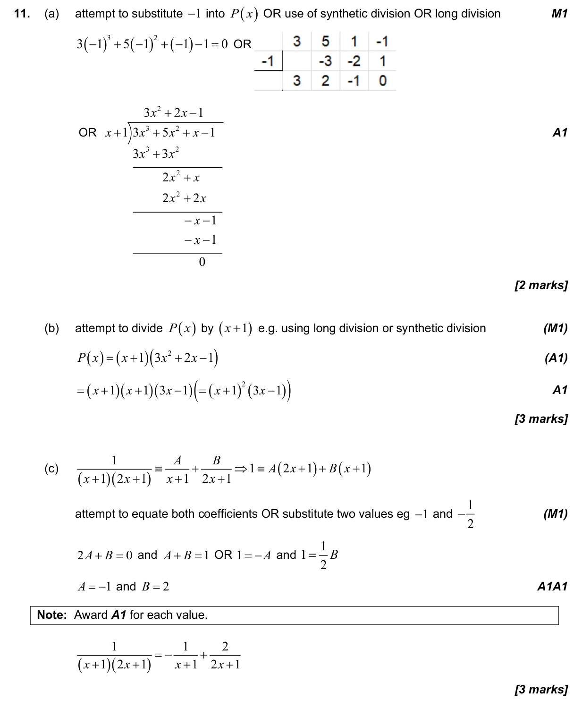
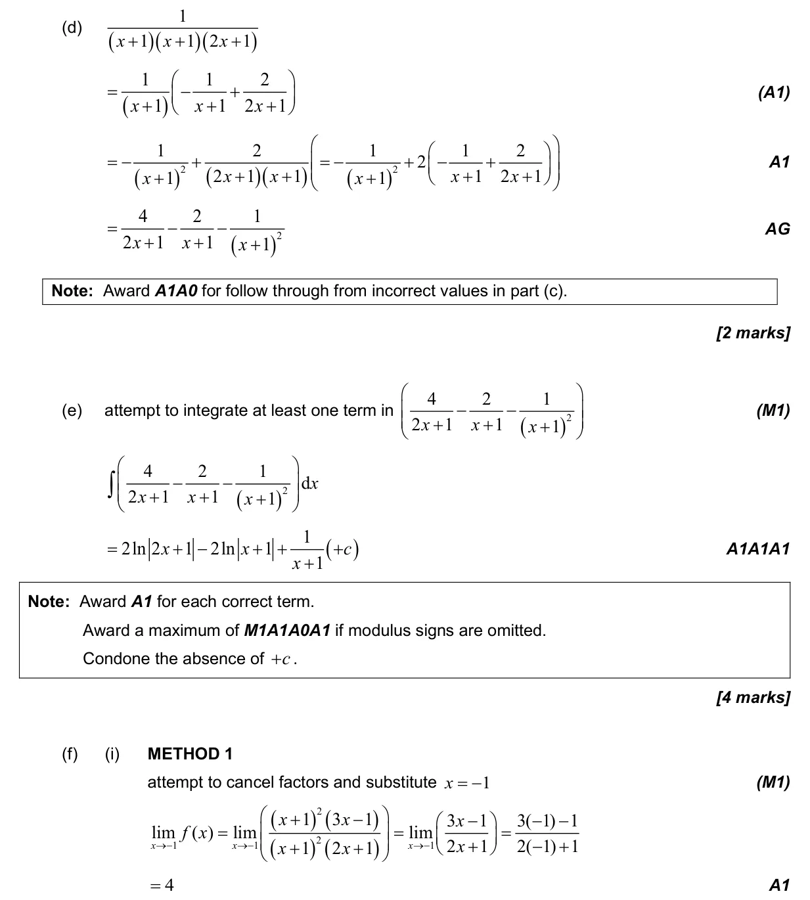
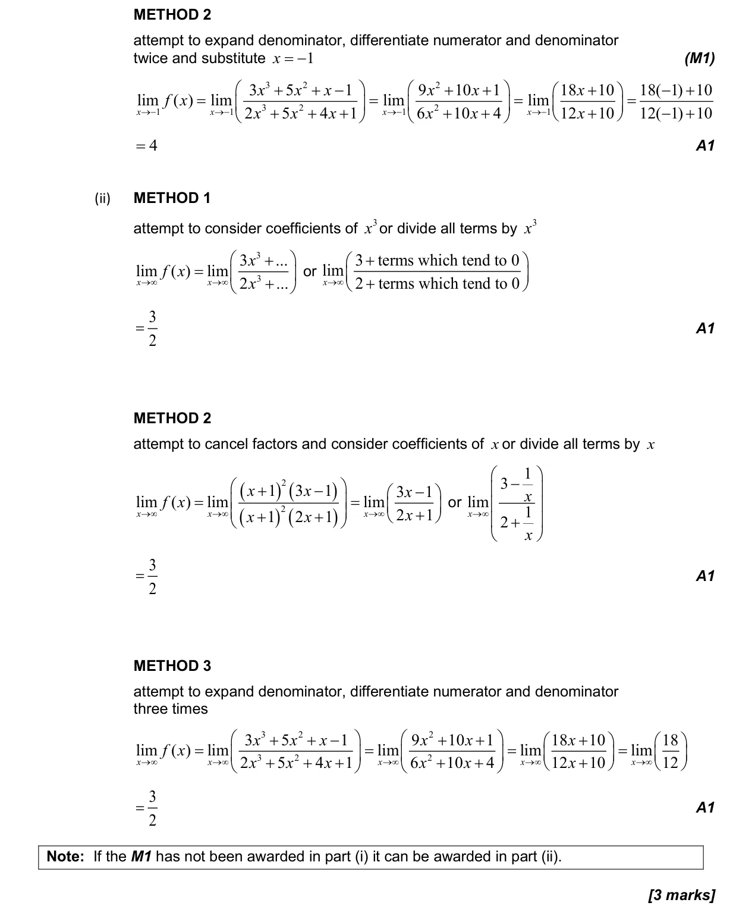

17 marks P1 TZ1 Section B No calculator 1.11 Partial fractions2.12 Polynomial functions: factor and remainder theorems, sum and product of roots5.15 Further standard derivatives and integrals5.12 Continuity, differentiability, limits and differentiation from first principles5.13 Limits by l'Hôpital's rule or Maclaurin series Question Hide breakdown abcdef Markscheme 